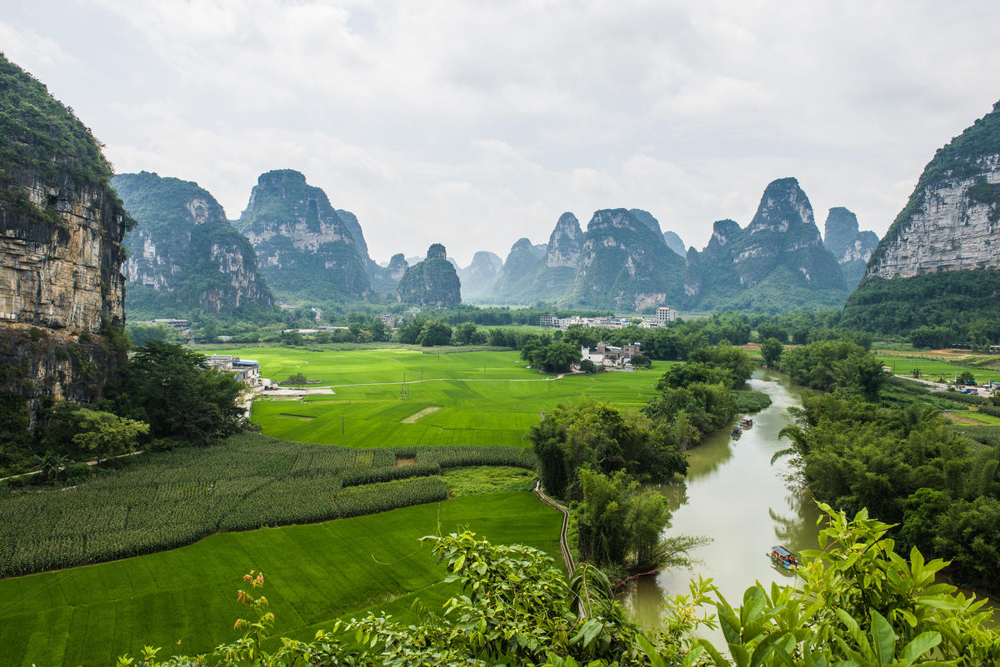

崇左明仕田园简介
www.luotuotravel.com 骆驼旅游网
门票：
竹排120元。
开放时间：
8:00-17:00

明仕田园简介：
明仕田园风光，距县城53公里，为国家一级景点。方圆20公里的景区山清水秀， 山环水绕，素有小桂林之称。这里翠竹绕岸，农舍点缀，独木桥横，稻穗摇曳，农夫 荷锄，牧童戏水，风光俊朗清逸，极富南国田园气息。美丽的山峰，明镜似的小河， 划入天际的扁舟，满洒的翠竹，绿油油的稻田，乡土风味十足的水车、水渠与独木桥 ，让您泛舟河上，感受竹丛山峰蓝天白云倒影如镜，再衬以小桥流水，百鸟啼鸣，以 及村舍中的鸡鸣狗吠，是一处难求的令人迷醉的田园风光。